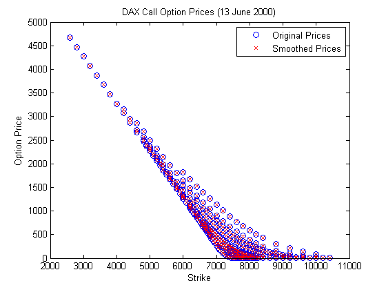
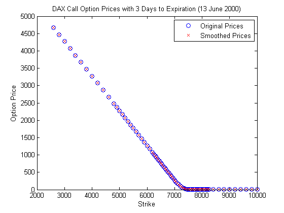
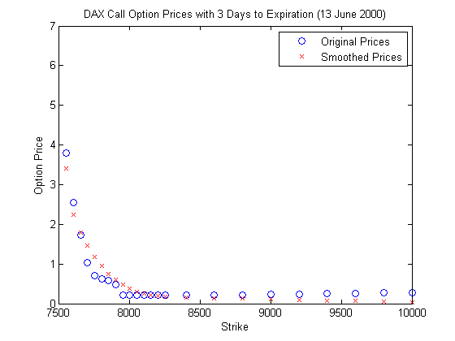
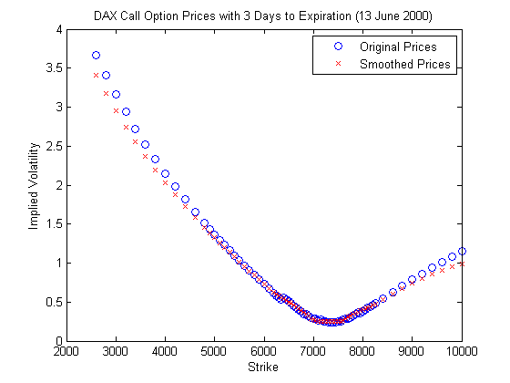
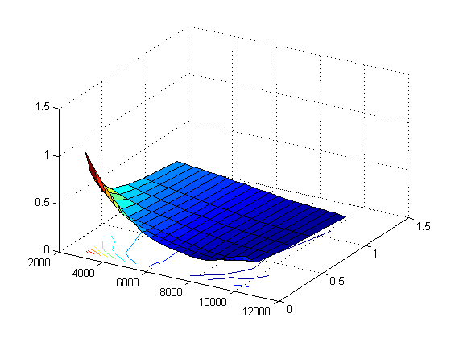

Arbitrage-free Smoothing of the Implied Volatility Surface
Implementation according to Fengler (2009) with example data taken from Appendix B.
Contents
Load data
clear load data_appendixB ivs = ivs/100; r = r/100; % * dax = scalar = close of DAX index on 13 June 2000 % * ivs = (KxT) = implied volatility surface of call options (NaN if no % option is traded with corresponding strike-maturity combination % * maturity_days (1xT) = maturity (in days) of options for each column of % ivs % * q = scalar = dividend yield of index (is 0 since DAX is a performance % index) % * r = (1xT) = risk-free rate corresponding to maturities % * strike = (Kx1) = strikes of options for each row of ivs
Prepare data
All input data should be either a vector or a scalar. In the later case, the scalar is transformed into a corresponding vector with the same value in each element.
T = length(maturity_days); K = length(strike); implied_volatility = reshape(ivs, [], 1); strike = repmat(strike, T,1); maturity = reshape(repmat(maturity_days',1,K)',[],1); pos_nan = isnan(implied_volatility); implied_volatility = implied_volatility(~pos_nan); strike = strike(~pos_nan); maturity = maturity(~pos_nan); [~, pos] = ismember(maturity, maturity_days); interestrate = r(pos); maturity = maturity/365.25; clear K T ivs maturity_days pos_nan
Estimation using strike-call_price nodes
call_price = blsprice(dax, strike, interestrate, maturity, implied_volatility, q); [u, tau, g, gamma] = ivs_smoothed(call_price, dax, strike, ... maturity, interestrate, q, implied_volatility); [call_price_smoothed, implied_volatility_smoothed] = ... evaluateSpline(u, tau, g, gamma, dax, strike, ... interestrate, maturity, q); % Plot Original and Arbitrage-Free Smoothed Prices figure1 = figure; plot(strike, call_price, 'ob'); hold on plot(strike, call_price_smoothed, 'xr'); title('DAX Call Option Prices (13 June 2000)'); xlabel('Strike'); ylabel('Option Price'); legend('Original Prices', 'Smoothed Prices'); hold off % Plot results for smallest maturity (motivated by Figure 4 in the working % paper version Fengler (2005)) figure2 = figure; pos = maturity==tau(1); plot(strike(pos), call_price(pos), 'ob'); hold on plot(strike(pos), call_price_smoothed(pos), 'xr'); title('DAX Call Option Prices with 3 Days to Expiration (13 June 2000)'); xlabel('Strike'); ylabel('Option Price'); legend('Original Prices', 'Smoothed Prices'); hold off % Plot Lower Right Details for Strikes between 7500 and 10000 figure3 = figure; pos = maturity==tau(1) & 7500 <= strike & strike <= 10000; plot(strike(pos), call_price(pos), 'ob'); hold on plot(strike(pos), call_price_smoothed(pos), 'xr'); title('DAX Call Option Prices with 3 Days to Expiration (13 June 2000)'); xlabel('Strike'); ylabel('Option Price'); legend('Original Prices', 'Smoothed Prices'); hold off % Plot Implied Volatility Smile for Strikes between 7500 and 10000 figure4 = figure; pos = maturity==tau(1); plot(strike(pos), implied_volatility(pos), 'ob'); hold on plot(strike(pos), implied_volatility_smoothed(pos), 'xr'); title('DAX Call Option Prices with 3 Days to Expiration (13 June 2000)'); xlabel('Strike'); ylabel('Implied Volatility'); legend('Original Prices', 'Smoothed Prices'); hold off % Plot Smoothed Implied Volatility Surface ivs = blsimpv(dax,u, repmat(r', size(u,1),1), repmat(tau', size(u,1),1), g, [], q); figure5 = figure; axes5 = axes('Parent',figure5,'YDir','reverse'); view(axes5,[-59.5 34]); grid(axes5,'on'); hold(axes5,'all'); surfc(repmat(tau(2:end)', size(u,1),1), u(:,2:end), ivs(:,2:end),'Parent',axes5);    
close figures
close(figure1); close(figure2); close(figure3); close(figure4); close(figure5);